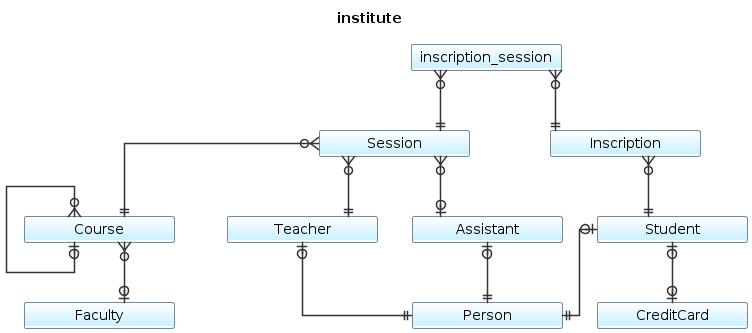
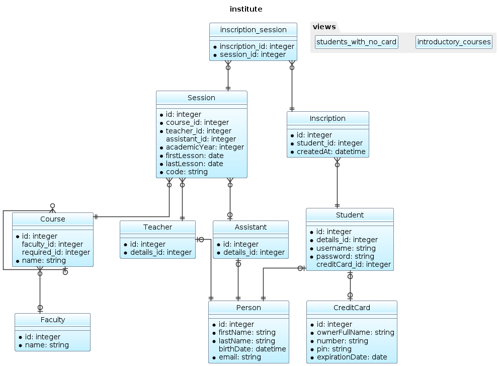

Diagram sizes
Mini
Mini diagrams are composed by table names only.
$dbDraw = new DbDraw($connection);
$mini = $dbDraw->generatePuml(DbDraw::MINI);

Midi
Midi diagrams displays columns names and type.
$dbDraw = new DbDraw($connection);
$midi = $dbDraw->generatePuml(DbDraw::MIDI);

Maxi
Same as Midi, but Views are also displayed.
$dbDraw = new DbDraw($connection);
$maxi = $dbDraw->generatePuml(DbDraw::MAXI);
